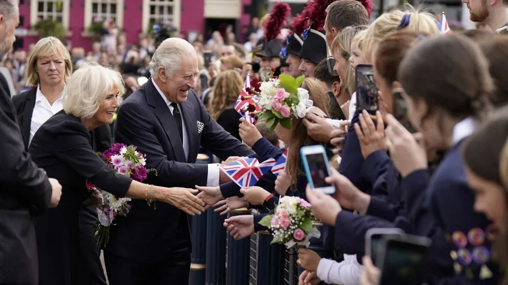

当地时间9月10日，英国登基委员会在位于伦敦的圣詹姆斯宫正式宣告， 现年73岁的查尔斯三世为英国君主。查尔斯三世是已故女王伊丽莎白二世和菲利普亲王的长子， 成为英国新君主后，其自动继承了价值超过6.5亿英镑的遗产。
查尔斯继承了价值超过6.5亿英镑的兰开斯特公国，兰开斯特公国是英国现存的两个“公爵领地”之一， 另一个为康沃尔公国。作为查尔斯的长子，王子已经成为王位第一顺位继承人， 并且与妻子凯特一同继承了“康沃尔公爵及康沃尔公爵夫人”的头衔，此外还自动继承了价值10亿英镑的康沃尔公国。
据公开资料显示，建于13世纪的兰开斯特公国地产达1.8万多公顷，主要分布于威尔士和英格兰各郡，由“商业、农业和住宅”等组成， 包括十座城堡和萨沃伊皇家教堂等。现由独立的信托机构运作以为英国君主提供收入，且不受英国皇家财产局的管辖。根据财务记录， 兰开斯特公国去年为女王带来了超过2400万英镑的收入。
根据英国法律，价值超过32.5万英镑的遗产需要缴纳40%的遗产税。但英国议会于1993年通过了一项规定， 免除新君主对继承的财产纳税。该规定于2002年首次实施。另外，1702年通过的一项法律禁止君主出售任何王室资产。
时任英国前首相约翰·梅杰在1993年通过该规定时表示，世袭君主制的情况是“独特的”，需要“特殊安排”。他称， 君主资产有可能会通过几代人缴纳的资本税而逐渐被削减，“我认为这是保护君主制独立的必要条件， 我不希望以任何方式减损这种独立性。也很少有人希望以这种方式改变王室的性质。”